Urban Transformation
-->
Code Assigment1
Urban transformation can refer to planning theory changes in each period and the approach to urban. Especially the improvement and replacement of buildings in a city, each of urban transformation plan has advantages and drawbacks.
- Sydney
- liuzhou
Green Square - Sydney
Concept
For Urban Transformation, its significance is to transform the previously heavily polluted industrial areas into green, environmentally friendly and sustainable new cities in line with the law of social development. The Australian government has launched a plan to rebuild the old city, and Green Square has become the first target.
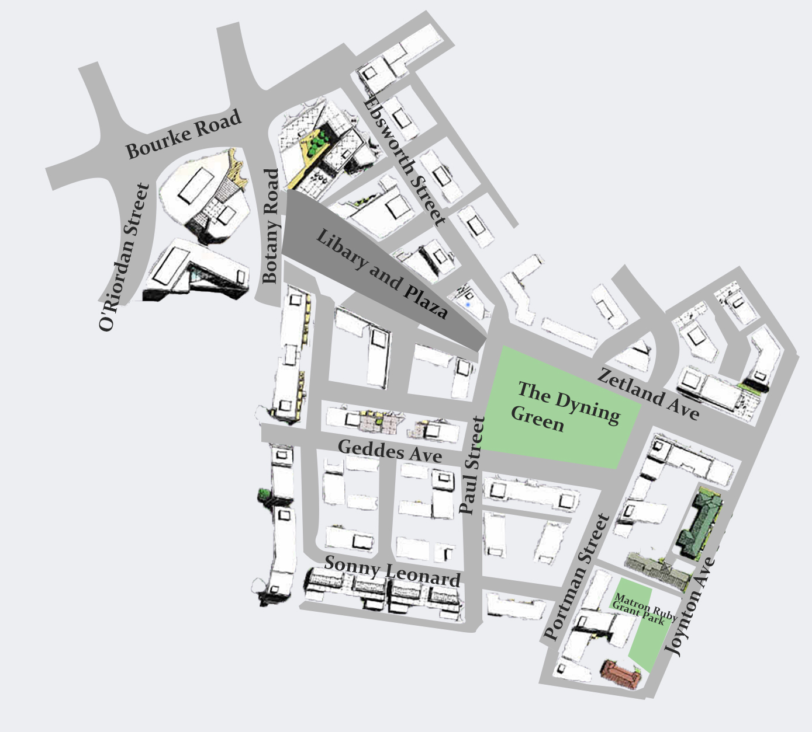
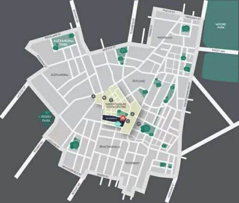
For 100 years from 1850 to 1960, the Green Square project was located in a wool-based factory area that was once a huge dump from 1970 to 1996. Designer Stewart Hollenstein built a new area in Sydney with a green square area of 278 hectares. The area is including five urban areas: Beaconsfield, Zetland, Rosebery, Alexandria and Waterloo. It is only 3.5 kilometers away from Sydney CBD and 4 kilometers from Sydney Kingsford Airport. There are 30500 new residential units, of which about ten thousand are under evaluation or construction. By 2030, when all the shrubs are built, the total population of Green Square will probably reach 61,000, depending on the expected trend in the real estate market, as well as economic and other factors. 21000 of the formal jobs are available, mostly from the center of new towns. Green square was planned as one of the first "low-carbon zones" in Sydney. The region's new development projects are powered by a green energy system called tri-generation. This system applies recycled water to non-drinkable areas and automatically eliminates waste. The system uses natural gas as the main energy and provides power, heat and air conditioning for the surrounding buildings. The energy efficiency of the system is twice that of the coal-fired power generation system, and the greenhouse gas emissions are reduced by more than 60%. In the whole green square project, the community center has become the core of sustainable development.
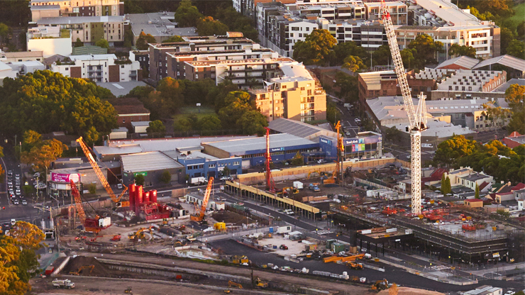
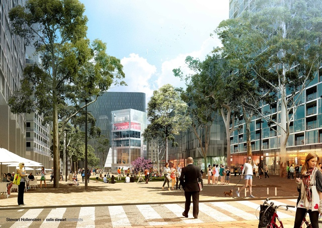
Many people in other areas have expressed support for the Green Square project and want to move to the Green Square area. But for the older residents of the Green Square project area, the recent residential experience is extremely poor. For example, Mark Woodbridge, a resident of Zatland for five years, began complaining about the increase in residents and cars, and traffic jams were the biggest daily problem. However, some people said that Green Square project as the Australian government's attempt to urban transformation, there will certainly be some problems, but with the expansion of the renovation area and the improvement of the urban transformation plan, these problems will be solved.
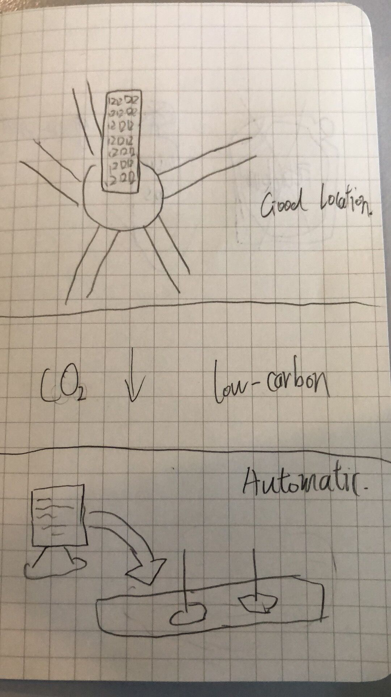
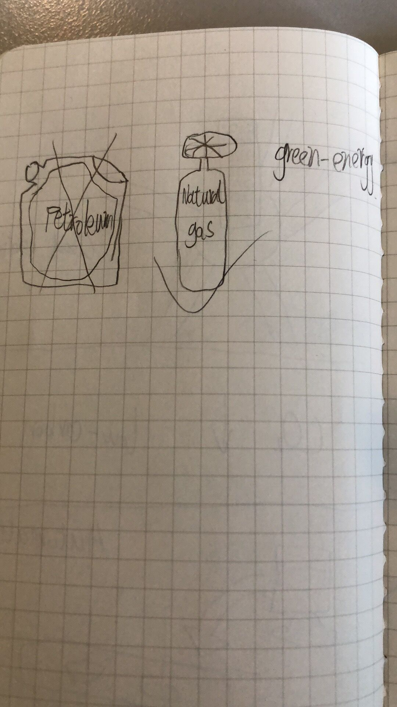
I think the Green Square project started as a sign of urban progress, which also proves that urban transformation is essential for today's cities, transforming old urban or industrial areas into sustainable new urban systems that enhance people's quality of life while protecting the environment and ecological equilibrium. Making residents' life and travel easier. As new cities become more and more recognized, I think more and more cities and regions will support Urban Transformation.
Pros
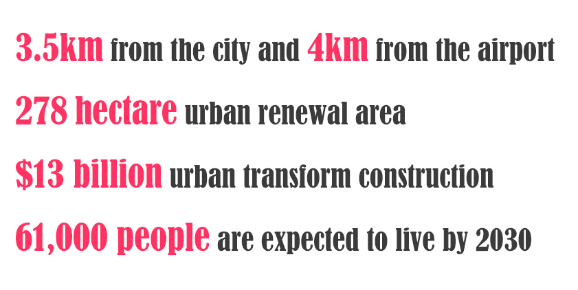Cons

Station - liuzhou
Concept
Urban transformation is a new term. With the development of science and technology, urban transformation has been paid more and more attention by architects. Urban transformation is a concept of transforming resource-based cities into sustainable cities, which in a sense refers to the progress of a city type. Now I'm going to tell you about a new design concept, a new city created by urban designer Stefano Boeri himself, and a very typical case of urban transformation - Liuzhou Forest City.
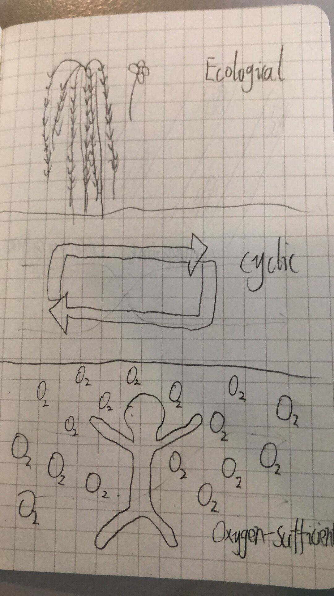
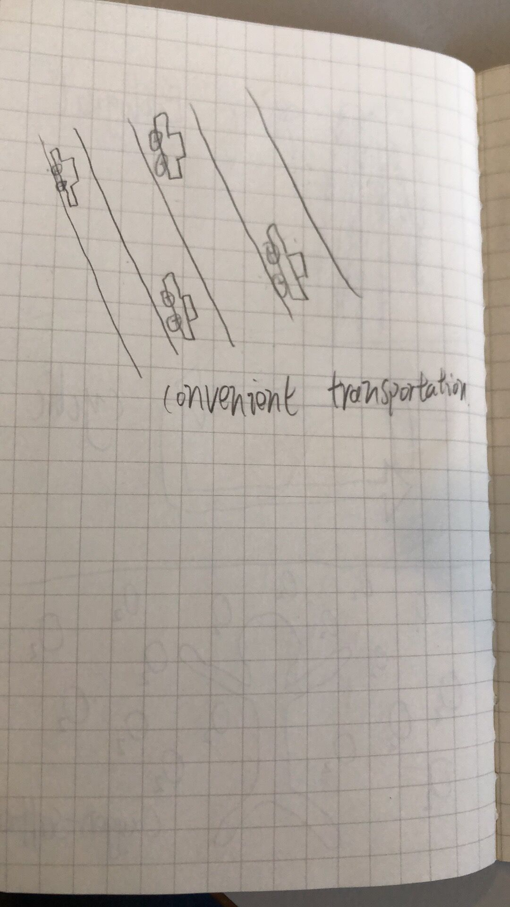
Liuzhou, China, is a city famous for its industry. As we all know, the development of Chinese cities is rapid, and the cities built in China are also seriously polluting the environment. The Chinese government is aware that Liuzhou, as a large industrial city, needs to be transformed into a sustainable city. Designer Stefano Boeri started a new urban design for Liuzhou. He built a small city in the mountains of Liuzhou suburbs. Liuzhou Forest City is located in the north of Guiliu Road in Liudong New District, close to the Lotus Hill scenic area, covering an area of about 175 acres along the Liujiang River. After the completion of the forest city, the Liuzhou New Area, which can accommodate more than 30,000 people on average, absorbs more than 10,000 tons of carbon dioxide and 57 tons of dust each year, and produces about 900 tons of oxygen at the same time. Liuzhou Forest City will be self-sufficient in a variety of functions, such as water recycling and waste water collection systems, rooftop solar panels for renewable energy. Stefano Boeri called this project Vertical ForestING. Vertical ForestING is a new generation of urban high-rise buildings covered entirely with leaves of trees and plants. It is an architectural design that promotes the coexistence of architecture and nature. It is also an invention that adapts to complex urban ecosystems. For buildings covered with plants, it reduces the reflection of the mirror to the building and thus reduces the heat island effect. Vertical ForestING forms another urban environment where people can live close to trees, shrubs, and plants in the city; this situation is usually found only in suburban houses with gardens, but the agricultural land needed for this development model is now considered an energy consumption that is expensive and far from compact. Public services in a city.
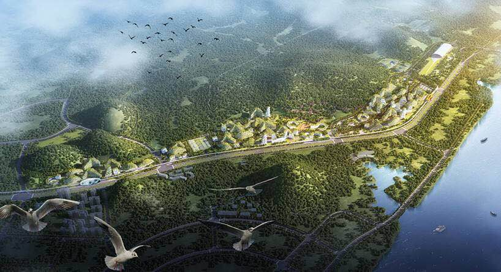
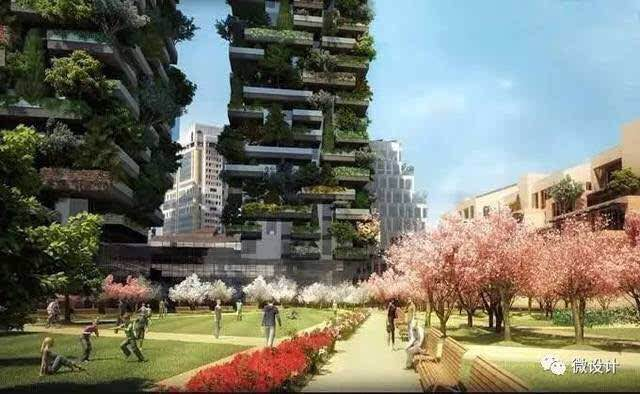
Most residents feel that this urban model is what they expect. It has realized a new scientific city mode with low consumption, low emission, high efficiency, harmony and order. Of course, a small number of economists feel that there are some problems in the urban transformation of Liuzhou, first of all, the maintenance of climate and plants, in some dry and cold areas is not conducive to the survival of plants, and rainstorm weather is likely to cause rain-soaked floor problems. Secondly, the problem of construction costs, from the initial construction to the late plant pruning, requires a lot of money to maintain. Finally, the problem of housing area, plants will occupy a large number of housing area, especially in China with a large population, urban housing area has been valued by people.
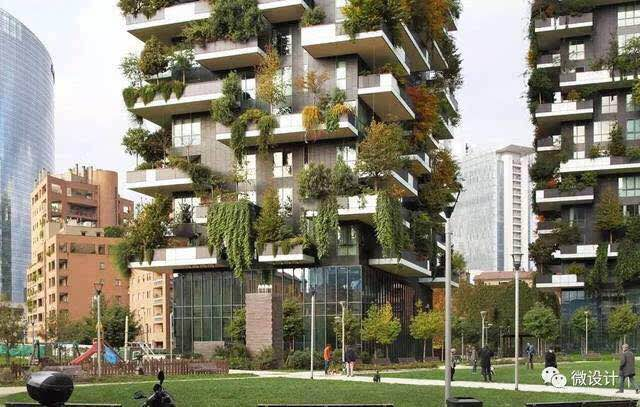
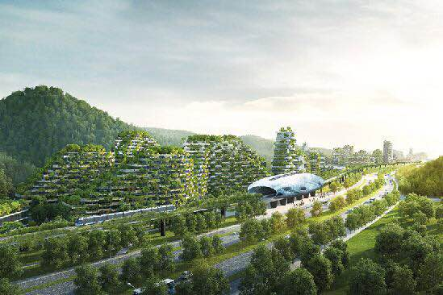
Architecture should not be simply the house we live in. It should be a combination of aesthetics and livability, not an ostentation. Although the vertical forest cannot replace other types of residential products, a wide range of promotion, but the vegetation moved into the air, around the room, the experience of living space will be a qualitative improvement.
Pros
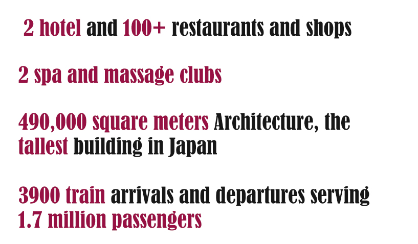Cons
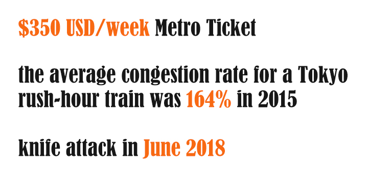Summary
In conclusion, Green Square Station in Sydney, Australia and liuzhou Station in China are two different Urban Transform Planning, it may be the reason of different cultural background. In this way, the Keyword of Green Square can be concluded neighbour-hoods community and new transportation system. The liuzhou Station tend to like a commercial district and underground centre. It cannot be denied that there both are successful Urban Transformation, although it still existing shortcoming.
References
http://news.yuanlin.com/detail/2017210/249904.htm
http://www.cnki.com.cn/Article/CJFDTotal-JZXB201609021.htm
http://madan.org.il/en/news/futuristic-green-city-china
https://www.createdigital.org.au/china-city-home-trees-people/
https://www.sohu.com/a/130995056_120015